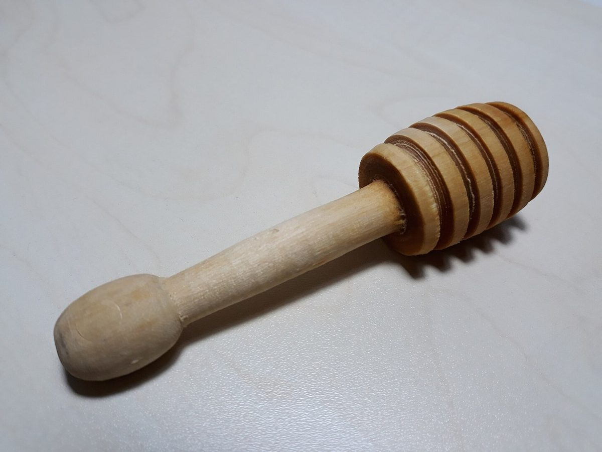

カフェ / 岐阜県岐阜市
cafe旅人の木
カフェ「cafe 旅人の木」のご案内ページです。営業時間やメニューなど、詳しいことは準備中。まずはInstagramをのぞいてみてください。

制作側の連想
のこぎりの部位の配置図
このページの図は、手引きのこぎりの部位に番号を振ったものです。刃先・歯・刃身・背・刃元・柄の六つ。制作側の連想で、お店の理念・由来とは無関係です。お店が提供するものや、お店の考えを示すものでもありません。
六つの部位
先から柄まで、番号順に
- 1
刃先はさき
のこぎりの先端側。板の端に最初にふれるところです。
- 2
歯は
刃の縁に並ぶ、小さな三角のぎざぎざです。
- 3
刃身はみ
歯が並ぶ、薄くて細長い金属の板の部分です。
- 4
背せ
歯とは反対側の縁。すっと直線に伸びています。
- 5
刃元はもと
柄に近い側の端。ここで刃身が柄へつながります。
- 6
柄え
手で握る部分。刃身を支えて、力を伝えます。
部位の説明は、のこぎりという道具についての一般的な言葉をまとめたものです。
ギャラリー(イメージ)
木目と、ひと息つく一杯




写真は木目・コーヒー豆・はちみつ用の匙・花・カップのイメージです。お店のものではありません。
ご案内
お店のこと(確認できたものだけ)
| 所在地 | 〒500-8842 岐阜県岐阜市金町５丁目３−４ |
|---|---|
| 電話 | 準備中 |
| 営業時間 | 準備中 |
| 定休日 | 準備中 |
| ご予約 | 準備中 |
| 駐車場 | 準備中 |
| SNS | Instagram @cafe.tabibitonoki |